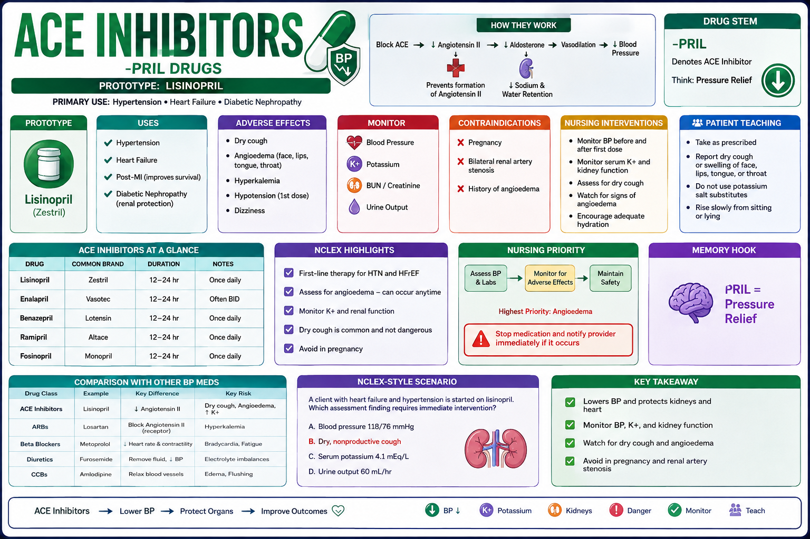
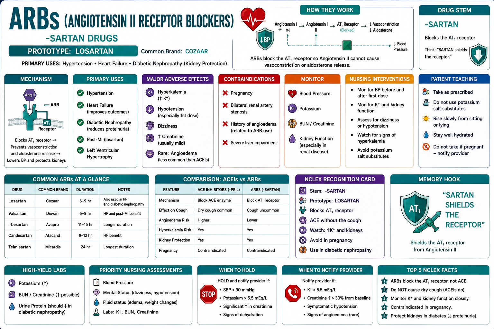
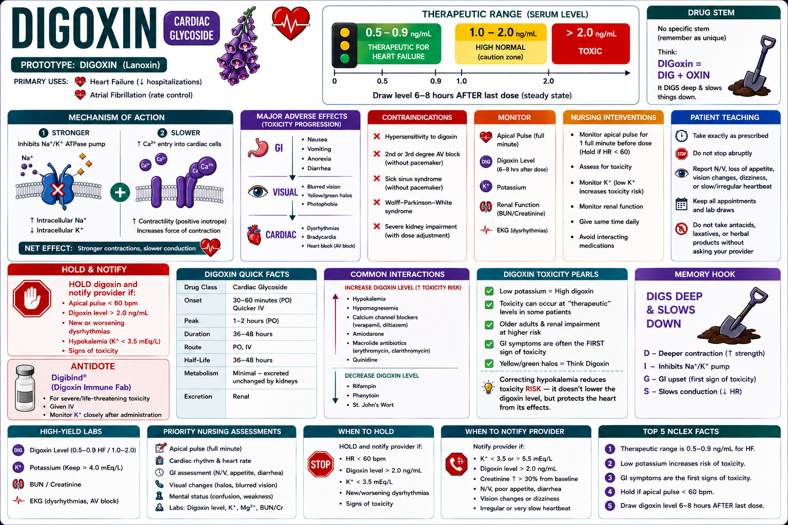
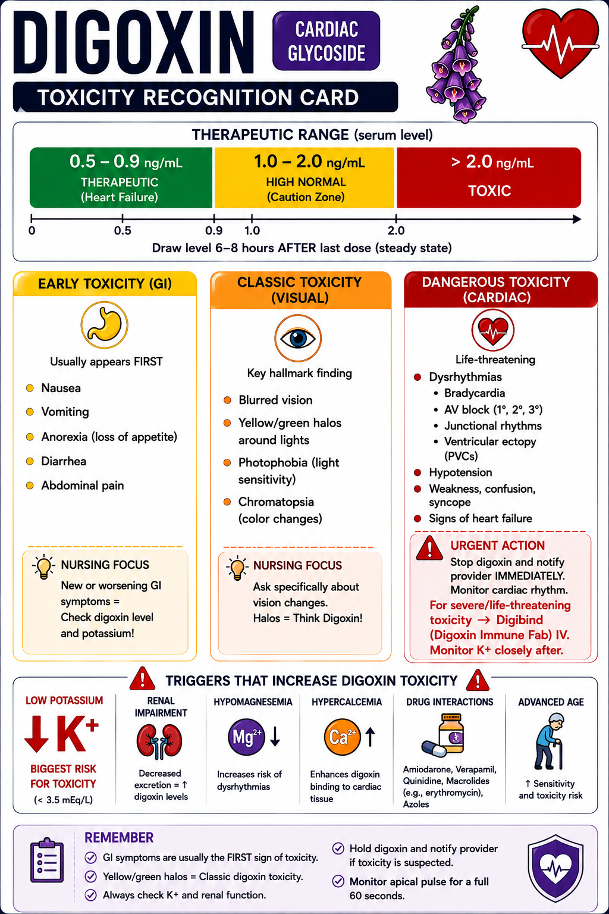
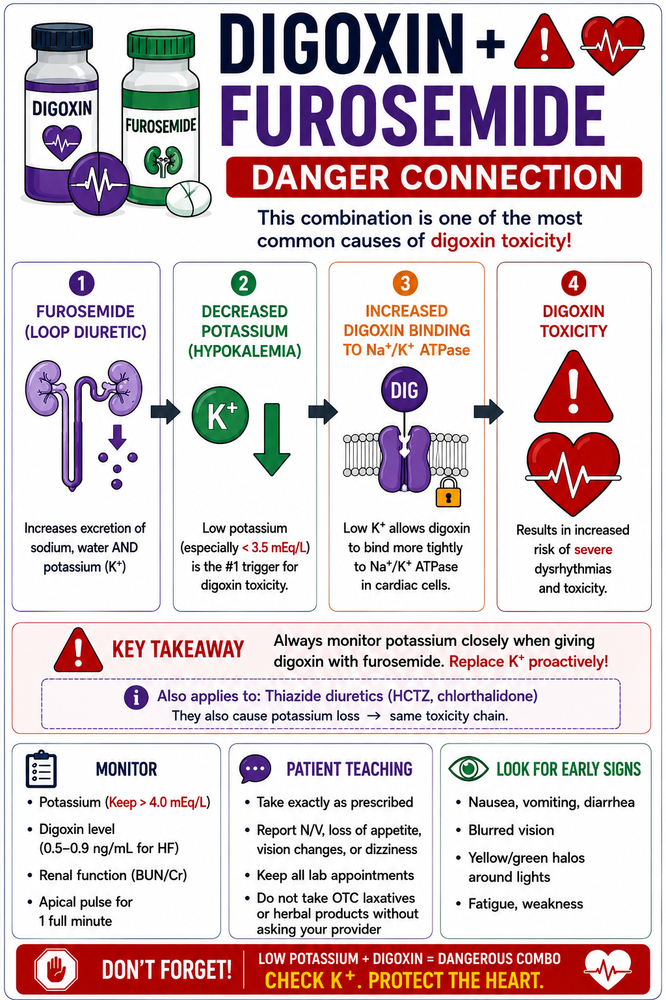

Master drug principles, high-alert meds, and safe administration for NCLEX success
Phase 1 · FoundationsWhy this module matters: Pharmacology questions appear on every NCLEX — they're woven into med-surg, maternal, pediatric, and psych questions alike. You won't be asked to memorize every drug, but you MUST understand drug classes, mechanisms, key adverse effects, and nursing priorities.
Pharmacological and Parenteral Therapies = ~13–19% of NCLEX-RN questions (the single largest subcategory in Safe and Effective Care).
What the body does to the drug — absorb, distribute, metabolize, excrete (ADME)
What the drug does to the body — receptor binding, agonist vs. antagonist
Drugs with narrow therapeutic windows that can kill if given wrong
10 Rights protect patients; 3 checks before giving any drug
Know the suffix → know the class → predict action and side effects
Every high-alert med has a reversal agent — know the pairs
These infographic cards cover the most tested drug classes on NCLEX. Study the graphics, then answer the practice questions. Reference back to these cards whenever you're unsure.





Crushing these medications causes dose dumping, GI damage, or destroys the time-release mechanism:
| Suffix / Pattern | Drug Class | Key Action | Nurse Priority |
|---|---|---|---|
| -olol | Beta blocker | ↓ HR, ↓ BP, ↓ contractility | Hold if HR <60; don't stop abruptly |
| -pril | ACE inhibitor | ↓ BP via angiotensin blockade | Monitor K+; watch for dry cough |
| -sartan | ARB | ↓ BP, similar to ACEi (no cough) | Monitor K+, renal function |
| -dipine | Calcium channel blocker | ↓ BP, vasodilation | Watch for edema, flushing, reflex tachycardia |
| -statin | HMG-CoA reductase inhibitor | ↓ LDL cholesterol | Monitor LFTs; report muscle pain (myopathy) |
| -mycin / -micin | Aminoglycoside antibiotic | Kills gram-negative bacteria | Monitor BUN/Cr (nephrotoxic) + hearing (ototoxic) |
| -azole | Antifungal | Disrupts fungal cell membrane | Check LFTs; many drug interactions |
| -mab | Monoclonal antibody | Targeted immune modulation | Infusion reactions; immunosuppression |
| -pam / -lam | Benzodiazepine | CNS depression / anxiolytic | Fall risk; flumazenil reversal; no abrupt D/C |
| -pine (antipsych) | Atypical antipsychotic | ↓ dopamine/serotonin | Metabolic syndrome; EPS; NMS |
| -floxacin | Fluoroquinolone antibiotic | Broad-spectrum bactericidal | Tendon rupture risk; avoid in pregnancy |
| -tidine | H2 blocker | ↓ gastric acid | Confusion in elderly (cimetidine) |
| -prazole | Proton pump inhibitor (PPI) | ↓↓ gastric acid | Long-term: ↓ Mg, ↓ B12, fracture risk |
| Phase | What Happens | Clinical Relevance | NCLEX Watch |
|---|---|---|---|
| Absorption | Drug enters bloodstream from administration site | IV bypasses absorption → immediate effect; oral has variable absorption | IV = fastest onset; sublingual next; oral = slowest |
| Distribution | Drug moves from blood to tissues | Low albumin → more free drug → toxicity risk (elderly, malnourished) | Protein-bound drugs compete → drug interactions |
| Metabolism | Liver transforms drug (mainly CYP450) | Liver disease → reduced metabolism → drug accumulates | Check LFTs before hepatically metabolized drugs |
| Excretion | Kidneys remove drug from body | Renal failure → drug accumulates → toxicity | Check BUN/Cr before renally cleared drugs |
| Drug | Why Dangerous | Before Giving | Antidote/Reversal |
|---|---|---|---|
| Warfarin | Narrow window; bleeding vs. clotting | Check INR (therapeutic = 2–3; mechanical valves = 2.5–3.5) | Vitamin K (slow); FFP (fast) |
| Heparin (IV) | Unpredictable dose-response | aPTT (therapeutic = 60–100 sec); platelet count (HIT) | Protamine sulfate |
| Insulin | Hypoglycemia → death | Blood glucose; meal ready; correct type/dose/route | D50W (IV), glucagon (IM) |
| Digoxin | Narrow window; toxicity common in elderly | Apical HR <60 = hold; K+ level; dig level (0.5–2 ng/mL) | Digibind (digoxin immune Fab) |
| Morphine/Opioids | Respiratory depression → arrest | RR <12 = hold; sedation level; BP | Naloxone (Narcan) |
| Lithium | Narrow window; toxicity signs subtle | Li+ level (0.6–1.2 mEq/L maintenance); renal function; Na+ (low Na = toxicity) | Supportive; dialysis if severe |
| Methotrexate | Myelosuppression, hepatotoxicity | CBC, LFTs; avoid NSAIDs | Leucovorin (folinic acid) |
| Potassium (IV) | Cardiac arrest if given too fast | NEVER give IV push; max 10 mEq/hr; monitor ECG | Calcium gluconate for hyperK |
| Class | Examples | Coverage | Toxicity / Nurse Priority |
|---|---|---|---|
| Penicillins | Amoxicillin, Ampicillin, Piperacillin | Gram+, some gram- | Allergy (anaphylaxis); cross-react with cephalosporins (10%) |
| Cephalosporins | Cefazolin (1st), Cefuroxime (2nd), Ceftriaxone (3rd) | Broad; each generation adds gram- coverage | Allergy; Ceftriaxone can displace bilirubin (neonates — avoid) |
| Aminoglycosides | Gentamicin, Tobramycin, Amikacin | Gram-negative rods | 🚨 Nephrotoxic + Ototoxic; monitor BUN/Cr + hearing; peak/trough levels |
| Vancomycin | Vancomycin | MRSA, C. diff (oral) | 🚨 Red Man Syndrome (infuse slowly >60 min); nephrotoxic; monitor trough |
| Fluoroquinolones | Ciprofloxacin, Levofloxacin | Broad gram- | Tendon rupture (esp. Achilles); avoid in pregnancy/children; C. diff risk |
| Macrolides | Azithromycin, Clarithromycin, Erythromycin | Atypicals (Mycoplasma, Chlamydia) | QT prolongation; GI upset; drug interactions (CYP3A4) |
| Tetracyclines | Doxycycline, Minocycline | Atypicals, Rickettsia, acne | Avoid in pregnancy/children <8 (teeth staining); phototoxic; dairy ↓ absorption |
| Sulfonamides | TMP-SMX (Bactrim) | UTI, PCP prophylaxis | Stevens-Johnson syndrome; avoid in sulfa allergy; increase hydration |
| Carbapenems | Meropenem, Imipenem | Broadest spectrum — last resort | Seizure risk; C. diff risk; cross-react with penicillin (rare) |
| Metronidazole | Flagyl | Anaerobes, C. diff, protozoals | Disulfiram reaction with alcohol; metallic taste; neurotoxic (high dose) |
| Drug/Class | Action | Key Side Effects | Nursing Priority |
|---|---|---|---|
| Beta-blockers (-olol) | ↓HR, ↓contractility, ↓BP | Bradycardia, hypotension, fatigue, bronchoconstriction | HR <60 → hold; contraindicated in asthma; never stop abruptly (rebound tachycardia) |
| ACE inhibitors (-pril) | ↓ Angiotensin II → ↓BP, ↓afterload | Dry cough (bradykinin), hyperkalemia, angioedema (STOP drug) | Monitor K+; do not give with K-sparing diuretics without close monitoring; 1st dose hypotension |
| ARBs (-sartan) | Block AT1 receptor → ↓BP | Hyperkalemia, renal impairment — no cough | Same as ACEi but no cough; do NOT combine with ACEi |
| CCBs (-dipine) | ↓ Ca2+ influx → vasodilation, ↓HR | Edema, flushing, reflex tachycardia (nifedipine), constipation (verapamil) | Verapamil/diltiazem: monitor HR; grapefruit juice ↑ drug levels |
| Loop diuretics (furosemide) | Inhibit Na-K-2Cl in loop of Henle → ↑ urine | Hypokalemia, hyponatremia, ototoxicity (high dose IV) | Monitor K+ (replace prn); daily weights; ear ringing = call MD |
| Thiazides (HCTZ) | Inhibit NaCl reabsorption in DCT | Hypokalemia, hyperglycemia, hyperuricemia, hypercalcemia | Monitor K+; not effective if GFR <30 |
| Spironolactone | K+-sparing diuretic / aldosterone antagonist | Hyperkalemia, gynecomastia | Do NOT combine with ACEi/ARB without monitoring K+; avoid K+ supplements |
| Digoxin | ↑ cardiac contractility, ↓ HR (vagal) | Toxicity: nausea, yellow-green halos, bradycardia, arrhythmias | Apical pulse <60 → hold; K+ depletion → toxicity risk; therapeutic level 0.5–2 ng/mL |
| Amiodarone | Class III antiarrhythmic — broad action | Pulmonary toxicity, thyroid dysfunction, corneal deposits, photosensitivity, hepatotoxicity | Baseline PFTs/TFTs/LFTs; monitor for new cough/dyspnea; sunscreen; very long half-life |
| Statins (-statin) | ↓ LDL via HMG-CoA inhibition | Myopathy, rhabdomyolysis (rare), elevated LFTs | Report muscle pain (hold drug); check CK if muscle pain; grapefruit ↑ levels (simvastatin/lovastatin) |
Study each card below, then close the tab and answer the practice questions from memory. Come back here when you need to check your answers.
| Drug/Class | Used For | Key Adverse Effects | Nurse Priority |
|---|---|---|---|
| SSRIs (fluoxetine, sertraline) | Depression, anxiety, OCD, PTSD | Sexual dysfunction, GI upset, serotonin syndrome (with MAOIs), suicidal ideation (↑ first 2 wk) | Monitor for ↑ suicide risk first 2 weeks; takes 2–4 weeks to work; do NOT combine with MAOIs (14-day washout) |
| MAOIs (phenelzine) | Refractory depression | Hypertensive crisis with tyramine foods; fatal combos with SSRIs/meperidine/dextromethorphan | Tyramine-restricted diet (aged cheese, cured meats, wine); carry MAOI card; 14-day washout before/after SSRIs |
| Lithium | Bipolar disorder (mood stabilizer) | Toxicity: tremor, confusion, ataxia, arrhythmia, seizure | Therapeutic 0.6–1.2 mEq/L; adequate Na+ and fluid intake; low Na → toxicity; check levels regularly |
| Typical Antipsychotics (haloperidol) | Schizophrenia, acute agitation | EPS (dystonia, akathisia, tardive dyskinesia), NMS | Tardive dyskinesia = involuntary movements → irreversible if not caught; NMS = EMERGENCY (high fever, rigidity, altered MS) |
| Atypical Antipsychotics (clozapine, olanzapine) | Schizophrenia, bipolar | Metabolic syndrome, weight gain, QT prolongation; clozapine: agranulocytosis | Clozapine: weekly CBC (monitor WBC); all atypicals: monitor glucose, lipids, weight |
| Benzodiazepines (-pam/-lam) | Anxiety, alcohol withdrawal, seizures | CNS depression, respiratory depression, dependence, falls | Fall precautions; flumazenil reversal; NEVER stop abruptly (seizure risk); additive with alcohol/opioids |
| Buspirone | Generalized anxiety (non-addictive) | Dizziness, headache (no CNS depression) | Takes 2–4 weeks; NO abuse potential; no cross-tolerance with benzos |
| Drug | Mechanism | Key Adverse Effects | Nursing Priority |
|---|---|---|---|
| Acetaminophen | Central prostaglandin inhibition | Hepatotoxicity (>4g/day or EtOH use); NO anti-inflammatory effect | Max 4g/day (2g elderly/liver disease); check all combo products for hidden acetaminophen; N-acetylcysteine antidote |
| NSAIDs (ibuprofen, ketorolac) | COX inhibition → ↓ prostaglandins | GI bleed, nephrotoxicity, ↑ bleeding, worsens HTN/HF, avoid in pregnancy 3rd trimester | Give with food; avoid in renal impairment; use lowest dose shortest time; ketorolac max 5 days IV/IM |
| Morphine | Mu-opioid receptor agonist | Respiratory depression, sedation, constipation (doesn't resolve), N/V, urinary retention, histamine release | RR <12 → hold; assess sedation; bowel regimen always; naloxone at bedside |
| Fentanyl | Potent opioid agonist (100x morphine) | Rapid onset respiratory depression; chest wall rigidity (rapid IV) | Patch: 72-hr; avoid heat over patch; fever ↑ absorption; naloxone; do NOT use in opioid-naive pts (patch) |
| Hydromorphone (Dilaudid) | Potent opioid (5x morphine) | Same as morphine; higher potency = higher error risk | Confirm dose carefully; often confused with morphine — ISMP alert |
| Tramadol | Weak opioid + SNRI | Seizure threshold ↓; serotonin syndrome risk | Avoid with SSRIs/MAOIs; seizure precautions; DO NOT use if seizure history |
| Gabapentin/Pregabalin | Calcium channel modulation (neuropathic) | Dizziness, sedation, weight gain; enhanced with opioids → resp depression | Fall risk; taper to discontinue; additive sedation with opioids |
| Antidote | Reverses | Notes |
|---|---|---|
| Naloxone (Narcan) | Opioid overdose | Short half-life — may need repeat doses; watch for return of respiratory depression |
| Flumazenil | Benzodiazepine overdose | Short-acting; seizure risk in chronic benzo users; not used routinely |
| Protamine sulfate | Heparin | 1 mg protamine per 100 units heparin; slow IV push |
| Vitamin K | Warfarin (slow reversal — 24h) | FFP for immediate reversal; Vitamin K for next-day |
| Digibind | Digoxin toxicity | Fab antibody fragments; binds free digoxin |
| N-Acetylcysteine | Acetaminophen overdose | Most effective within 8–10 hours; monitor LFTs |
| Glucagon / D50W | Insulin overdose / severe hypoglycemia | Glucagon IM if no IV access; D50W pushes glucose immediately |
| Calcium gluconate | Magnesium sulfate toxicity | Keep at bedside whenever mag is infusing |
| Atropine | Bradycardia; organophosphate poisoning | Blocks muscarinic receptors; start 0.5mg IV bolus |
| Leucovorin | Methotrexate toxicity | Folinic acid "rescue" — gives cells an alternate folate source |
Absorption → Distribution → Metabolism → Excretion. Remember: the body processes every drug in this order.
Warfarin · Insulin · Lithium · Morphine/opioids · Potassium (IV) · Kemo drugs · Digoxin
Yellow-green halos (visual) · Heart block/bradycardia · Anorexia/nausea/vomiting · Bigeminy (irregular rhythm)
NMS: antipsychotics, SLOW onset (days), lead-pipe rigidity, no clonus. Serotonin: serotonergic drugs, FAST onset (<24h), hyperreflexia + clonus. Both → stop the drug.
Warfarin inhibits clotting factors that need Vitamin K: factors II, VII, IX, X. Antidote = Vitamin K. INR >3 → bleeding risk.
Aminoglycosides hurt the Ears (ototoxic) and Nephrons (nephrotoxic). Monitor for Tough trough levels. Always check BUN/Cr before giving.
Cough · Angioedema (STOP drug) · Potassium ↑ · Teratogenic · Orthostatic hypotension (first dose) · Proteinuria ↓ · Renal protection · Increase creatinine initially · Low BP
Diarrhea/nausea · Ataxia (tremors, shaking) · Toxicity from low sodium (Na+ out → Li+ in) · Transient memory issues → progresses to seizures/coma
All renally cleared drugs accumulate → toxicity. Check BUN/Cr before: aminoglycosides, vancomycin, metformin, digoxin, gabapentin, methotrexate. Dose must be adjusted or drug held.
NSAIDs worsen HF (retain Na/fluid). CCBs (verapamil/diltiazem) decrease contractility → avoid in systolic HF. Loop diuretics → hypokalemia → digoxin toxicity risk. Monitor K+ closely.
Metronidazole + alcohol = severe disulfiram reaction (flushing, vomiting, palpitations). Acetaminophen max 2g/day (or avoid). MAOIs + alcohol = hypertensive crisis risk.
Decreased renal/hepatic function → drugs stay longer → lower doses needed. High-risk: benzos (falls), anticholinergics (confusion), long-acting opioids. Beers Criteria lists drugs to avoid.
Avoid: tetracyclines (teeth/bone), fluoroquinolones, ACE inhibitors (fetal renal anomalies), NSAIDs in 3rd trimester (premature ductus closure), live vaccines, warfarin (category X).
| Finding | Drug | Action |
|---|---|---|
| HR 52 bpm | Metoprolol (beta-blocker) | HOLD — HR <60 |
| K+ = 3.0 mEq/L | Digoxin | HOLD — hypokalemia → toxicity |
| RR = 10/min | Morphine | HOLD — RR <12; give naloxone if needed |
| INR = 4.5 | Warfarin | HOLD — supratherapeutic; notify provider |
| Glucose = 58 | Regular insulin | HOLD — treat hypoglycemia first |
| SBP = 85 mmHg | Lisinopril | HOLD — SBP <90 |
| Platelets = 62,000 | Heparin (patient on it 7 days) | HOLD all heparin — assess for HIT |
Use this to identify and address gaps. Print this section for focused review.
Explain in your own words what happens to a drug that undergoes significant first-pass metabolism:
A patient with severe liver cirrhosis is prescribed a drug that is 90% hepatically metabolized. What do you anticipate and why?
For each drug, write the hold parameter and your rationale:
Digoxin:
Morphine:
Metoprolol:
Warfarin:
Match each drug to its antidote without looking at your notes:
Opioid overdose →
Heparin overdose →
Warfarin toxicity (fast reversal) →
Acetaminophen overdose →
Benzodiazepine overdose →
Mag sulfate toxicity →
For each suffix, write the drug class and one key nursing concern:
-olol
-pril
-mycin / -micin
-pam
In the table below, write the key differentiator for each:
| Feature | NMS | Serotonin Syndrome |
|---|---|---|
| Causative drug | ||
| Onset | ||
| Muscle tone | ||
| Treatment |